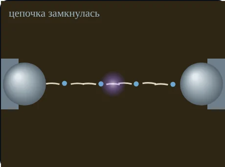
Техника высоких напряжений · тема 6
Почему масло, которое в чистом виде держит до 1000 кВ/см, на подстанции пробивается при 20 кВ на 2,5 мм — и что с этим делают
13.03.02 · интерактив «Пробой жидких диэлектриков» · по учебнику Важова и Лавриновича, разд. 1.2.1
Цели темы
Объяснить мостиковый механизм и роль воды в трёх её состояниях
Оценить, когда загорается газовый пузырёк, и зачем вакуумная заливка
Прочитать зависимость прочности масла от температуры и выбрать масло для Севера
Объяснить влияние времени, расстояния, полярности и объёма
Объяснить действие барьеров и маслобарьерной изоляции
Провести испытание масла по ГОСТ 6581-75 и сравнить с ПУЭ
Загадка
Ответ — в воде, волокнах и пузырьках газа. К концу пары вы назовёте, какие из них и как именно.
Связь с темами 1–5
Пробой газа в пузырьке зависит от p·d — отсюда влияние давления и дегазации
В масле тоже растут стримеры и лидер, и тоже есть вольт-секундная характеристика
Неоднородность снижает Uпр; поле в включении зависит от ε сред
Новое: примеси, которые двигаются в поле, и время, которое им для этого нужно.
1 · Жидкие диэлектрики
| Группа | ρ, Ом·см | ε | tgδ |
|---|---|---|---|
| неполярные (масло) | ≈ 1018 | 1,8…2,5 | ≈ 0,001 |
| слабополярные | 1011…1012 | ≈ 2,5 | ≈ 0,01 |
| сильнополярные | 107…108 | ≈ 5 | > 0,1 |
Очищенная, обезгаженная жидкость — до 1000 кВ/см.
Техническая — не меньше 10−2…10−3 % воды, газа, волокон, углерода: прочность в разы ниже.
Разброс: отдельный пробой — до 50…70 % от среднего, СКО 10…15 %. Поэтому ГОСТ требует шесть пробоев.
2 · Как выглядит · вкладка 0
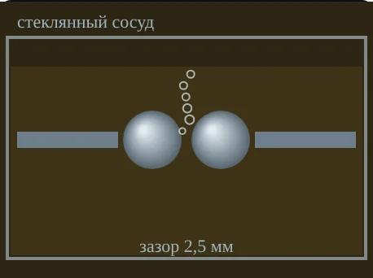
Ячейка 2,5 мм: искра, газ, углерод
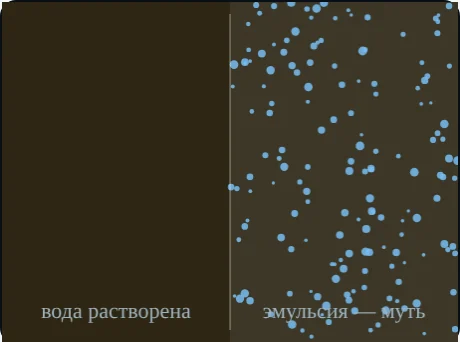
Эмульсия: масло мутнеет
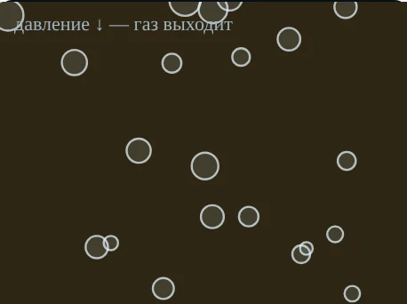
Пузырьки при откачке
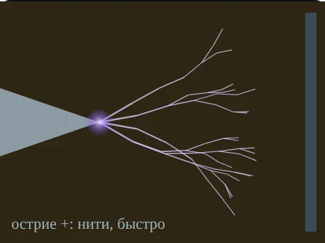
Острие +: нити, быстро
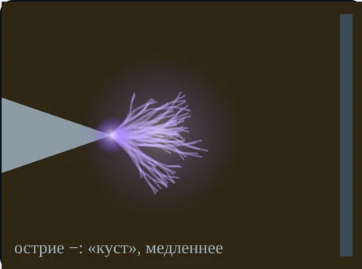
Острие −: «куст», медленнее
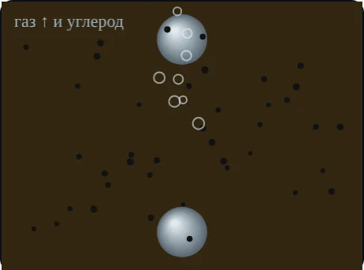
После дуги: газ и углерод
3 · Вода · вкладки 1 и 3
Невидима. ≈ 40 г/т при 20 °C, ≈ 400 г/т при 80 °C. Важна близость к насыщению
Капли 2…10 мкм, масло мутное. Снижает прочность сильнее всего
Больше ≈ 0,02 % — капли оседают. Сам прочность почти не снижает, но говорит об увлажнении
1 г/т = 1 ppm = 0,0001 % · lg Ws = 7,489 − 1726/T
3 · Мостик · вкладка 1
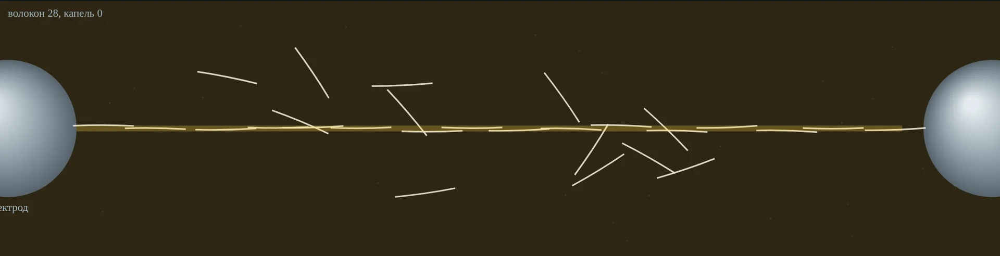
ε воды ≈ 80, целлюлозы ≈ 6,4 — больше, чем у масла: частицы втягиваются в сильное поле
Цепочка проводит ток — масло вскипает, в разрывах поле усиливается
Волокна гигроскопичны — с ними та же вода опаснее
3 · Сколько воды можно · рис. 1.25
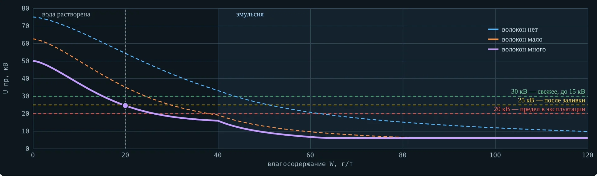
До 40 г/т вода растворена — спад плавный; дальше эмульсия — спад крутой.
Волокна сдвигают всю кривую вниз.
Пунктиры — нормы для оборудования до 15 кВ: 30, 25 и 20 кВ.
4 · Пузырёк · вкладка 2
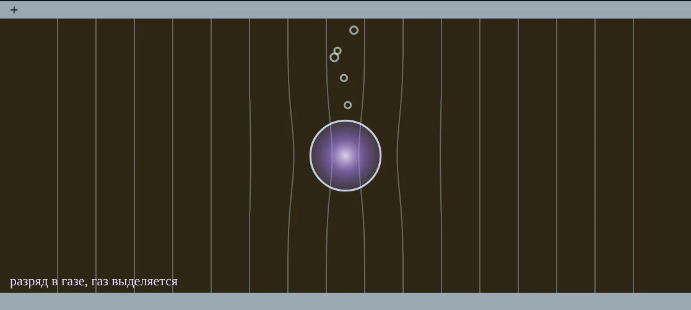
Eв = 3ε/(2ε + 1)·E = 1,22·E
ε газа ≈ 1 меньше ε масла 2,2 — поле в пузырьке выше.
Газ пробивается по Пашену при напряжённостях в десятки раз ниже прочности масла.
Загорелся — разлагает масло, газ выделяется, пузырёк растёт: частичные разряды (тема 10) и путь к пробою.
4 · Когда загорается · вкладка 2
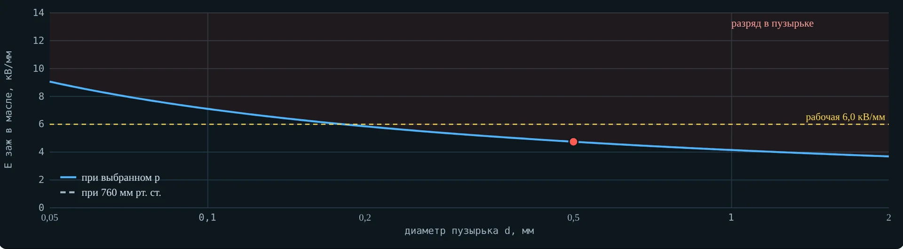
Eзаж = Uпр(p·d)/(1,22·d)
0,5 мм, 760 мм рт. ст.: Uпр ≈ 2,9 кВ → 4,71 кВ/мм
Рабочие поля в масляных каналах — 4…6,5 кВ/мм: запаса почти нет
Меньше пузырёк — нужно большее поле (левая ветвь Пашена)
4 · Давление · рис. 1.26
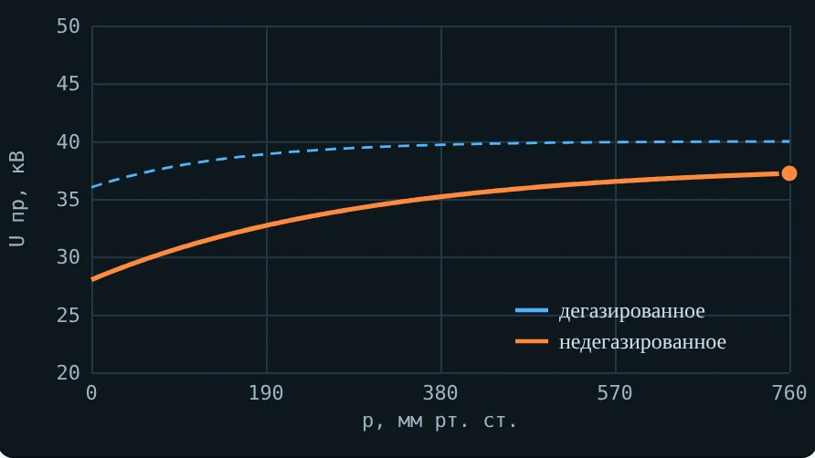
50 Гц: Uпр растёт с давлением — газ в пузырьках сжат.
Ниже атмосферы: недегазированное масло теряет прочность, дегазированное — почти нет.
Импульс: давление почти не влияет.
Практика: сушка и дегазация, заливка под вакуумом, выдержка перед включением.
5 · Температура · вкладка 3 · рис. 1.28
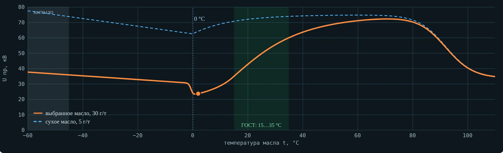
Остывание: растворимость падает, вода — в эмульсию
Ниже 0 °C: капли — лёд, ε льда ≈ ε масла, прочность растёт
60…80 °C: вода растворена — максимум
Выше 80 °C: испарение и кипение
Сухое масло: почти не зависит
5 · Север · вкладка 3
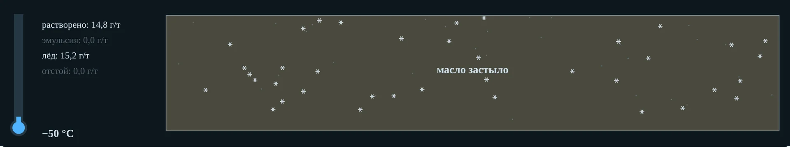
| Масло | Застывание | Документ |
|---|---|---|
| ТКп | не выше −45 °C | ГОСТ 982-80 |
| АГК, арктическое | не выше −60 °C | ТУ 38.1011271-89 |
ПУЭ, табл. 1.8.33, прим. 1: температуру застывания не проверяют только в умеренном климате — на Кольском проверяют
Проба зимой: выдержать банку закрытой до 15…35 °C, иначе на холодном стекле сконденсируется влага
6 · Время воздействия · вкладка 4 · рис. 1.29
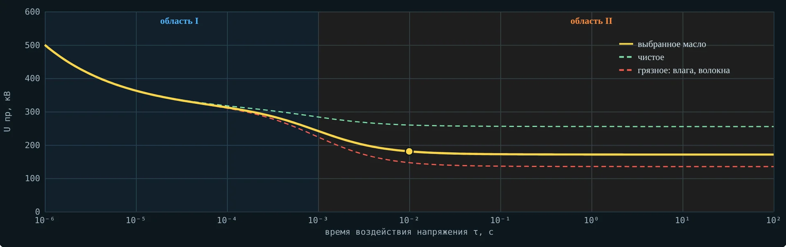
Область I, τ < 10−3 с: частицы не успевают сместиться; при τ < 10−5 с — запаздывание разряда, прочность резко растёт
Область II, τ > 10−3 с: мостики, пузырьки от нагрева — грязное масло падает сильнее
6 · Механизм пробоя
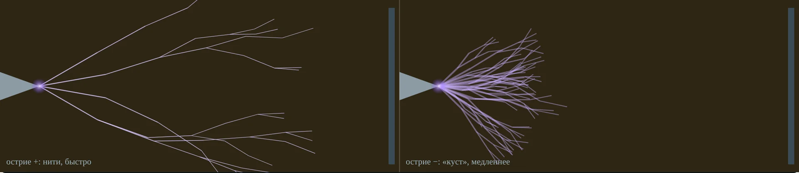
Длительное напряжение: мостик → нагрев → кипение и пузырьки → ионизация в газе → стример → пробой; в сантиметровых промежутках — лидер
Острие +: тонкие нити, быстро. Острие −: густой «куст», медленнее; Uпр при «−» выше
7 · Промежуток и полярность · рис. 1.30
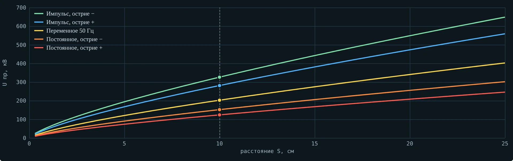
Uпр = A·Sn, n < 1
Средняя прочность U/S падает с ростом S
Острие «−» прочнее «+»; у воды — до 2…2,5 раза
Импульсы выше всех, постоянное — ниже
7 · Масштабный эффект · вкладка 4
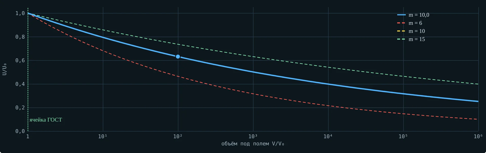
Пробой «по слабому звену»: в большом объёме найдётся частица или пузырёк
U ∝ (V/V0)−1/m
m ≈ 10, объём ×104 → U в 2,5 раза ниже
Ячейка ГОСТ — контроль масла, а не расчёт конструкции
8 · Импульс и порода · рис. 1.39
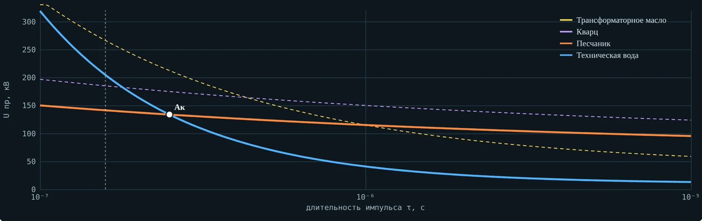
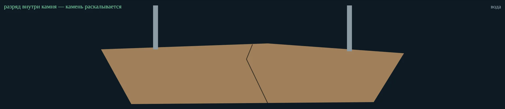
τ < 10−6 с: масло прочнее породы; τ < (2…3)·10−7 с — даже вода
Разряд «внедряется» в камень — электроимпульсное дробление и раскрытие руд (ТПУ)
9 · Барьер · вкладка 6 · рис. 1.31
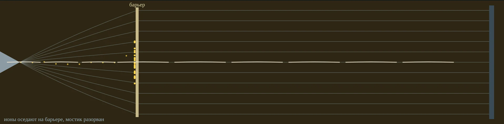
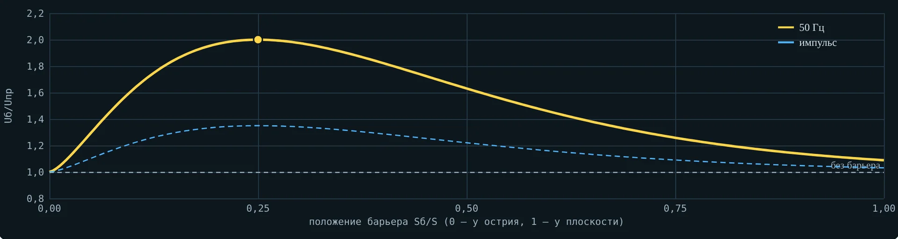
Ионы оседают на барьере — поле за ним выравнивается
Барьер рвёт мостики из волокон
На импульсе выигрыш меньше: ионы не успевают дойти
9 · Маслобарьерная изоляция · вкладка 6
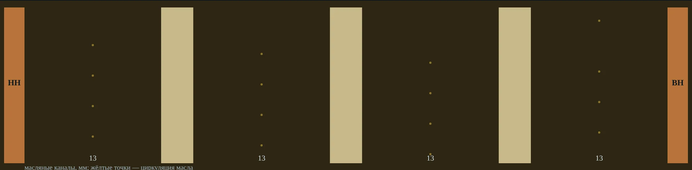
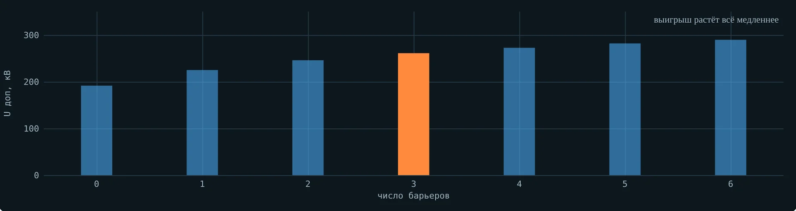
Цилиндры из электрокартона делят масло между обмотками на каналы; допустимо 40…65 кВ/см в зависимости от толщины канала
Выигрыш растёт с числом барьеров всё медленнее, а охлаждение хуже — ищут компромисс
10 · Испытание · вкладка 5 · ГОСТ 6581-75
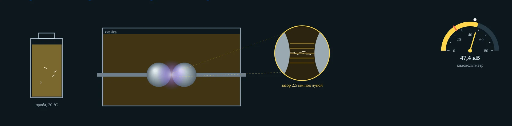
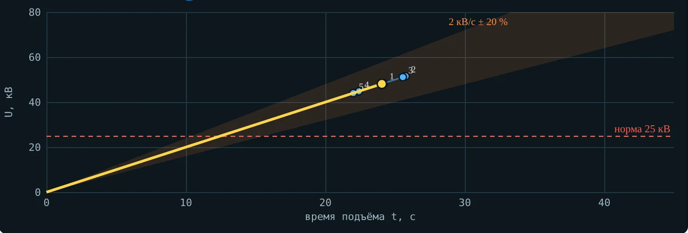
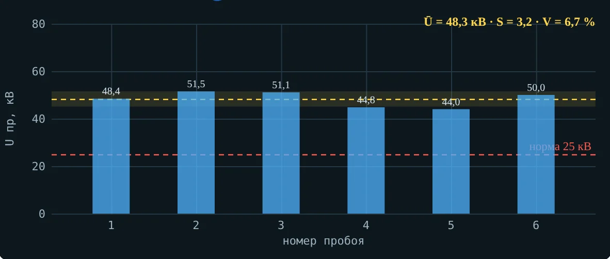
10 · Нормы · ПУЭ, табл. 1.8.33
| Класс оборудования | Свежее, до заливки | После заливки | Эксплуатация, предел |
|---|---|---|---|
| до 15 кВ | 30 | 25 | 20 |
| св. 15 до 35 кВ | 35 | 30 | 25 |
| от 60 до 150 кВ | 45 | 40 | по РД |
| от 220 до 500 кВ | 55 | 50 | по РД |
Первые две колонки — ПУЭ, 7-е изд., п. 1.8.36, табл. 1.8.33. Эксплуатация — РД 34.45-51.300-97, разд. 25 (в сетевых компаниях — СТО 34.01-23.1-001 (редакцию и применимость проверяют по действующему перечню организации)). Та же таблица ПУЭ: механических примесей и взвешенного угля — нет.
11 · Случаи с производства · вкладка 7
КТП у карьера: весной проба 18 кВ, осенью было 42
Лаборатория: проба с мороза открыта сразу — 21 кВ
Шахтная ПС: масло выключателя почернело после КЗ
Монтаж: залили без вакуума — газовое реле
Испытание: 42, 28, 51, 35, 22, 47 кВ — годно?
Обогащение: почему разряд идёт в кусок руды
Практика · мини-опыты под вкладками 1–4 и 6
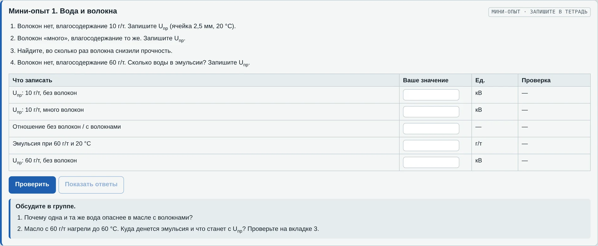
1. Вода и волокна: волокна снижают Uпр в 1,8 раза
2. Пузырёк: 760 и 380 мм рт. ст., 0,5 и 0,1 мм
3. Температура: +2 °C против 60 °C — почти втрое
4. Промежуток и объём: S·2 → U·1,68
6. Барьеры: 0,25S — ×2,0; импульс — ×1,35
Практика · вкладки 5, 8, 9
Пробивное напряжение масла по ГОСТ 6581-75: на установке или во вкладке 5
С подсказками и проверкой ответа: обработка пробы, пузырёк, эмульсия, барьер, Вейбулл
5 вариантов по 15 вопросов, оценка в конце
Итог темы 6 · ответ на загадку
Строят мостики при длительном напряжении; эмульсия опаснее всего, особенно в остывшем масле
Пузырёк загорается по Пашену при поле в 1,22 раза выше — дегазация и вакуумная заливка
ГОСТ 6581-75 и нормы ПУЭ; барьеры и узкие каналы делают масло прочнее в конструкции
Поэтому техническое масло на 2,5 мм даёт десятки киловольт, а не 250: прочность определяют примеси, время и объём.
Проверьте себя